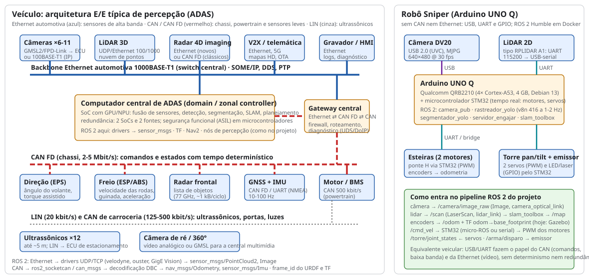
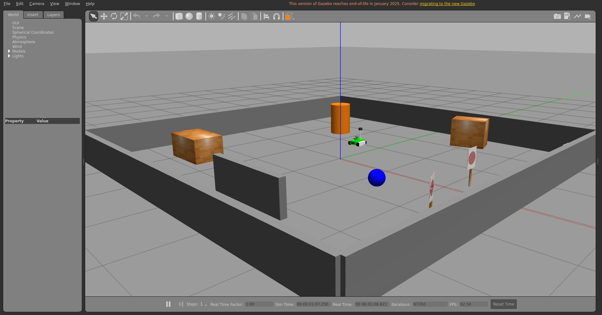
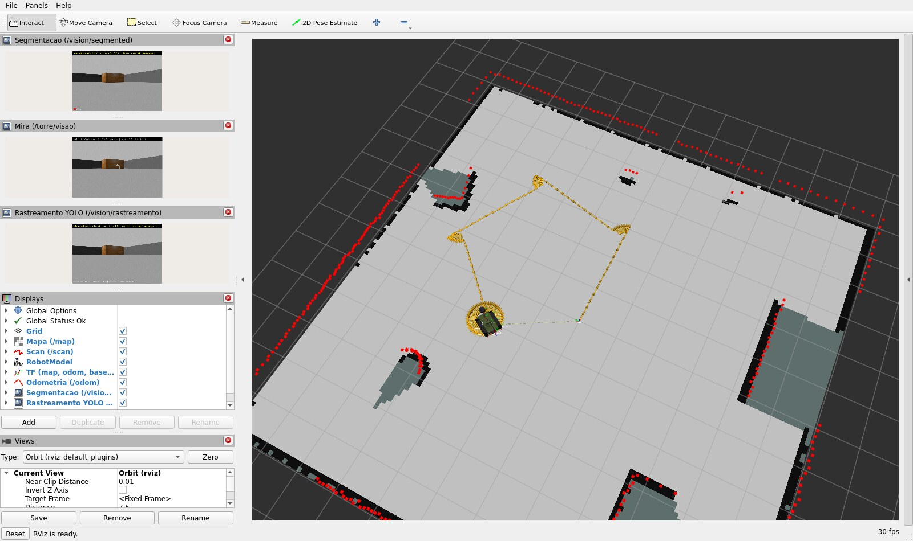
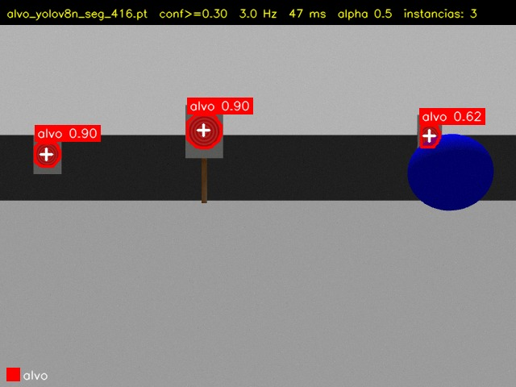
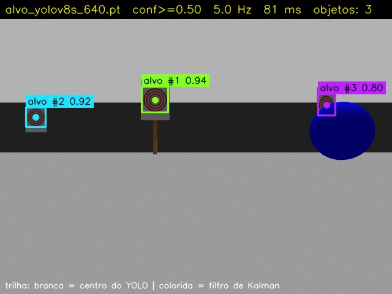
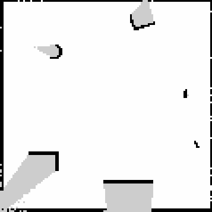
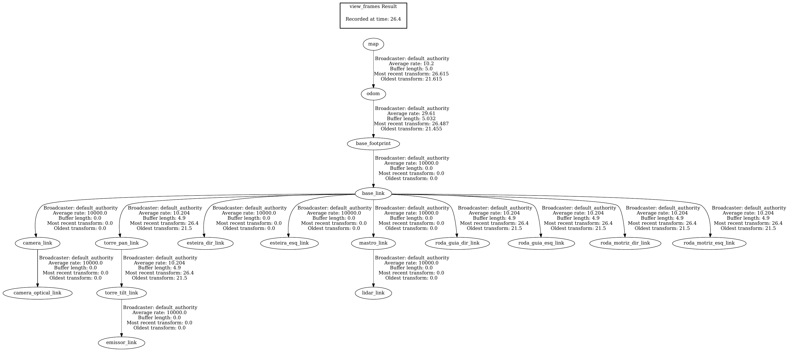
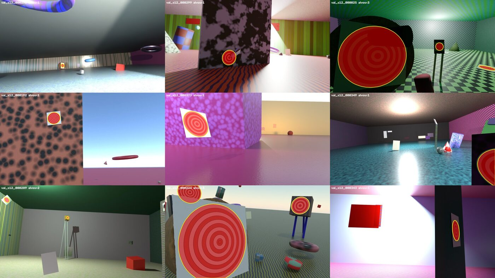
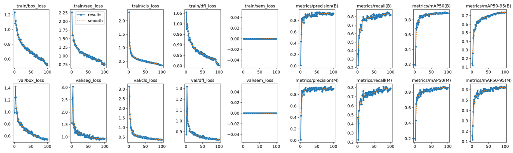
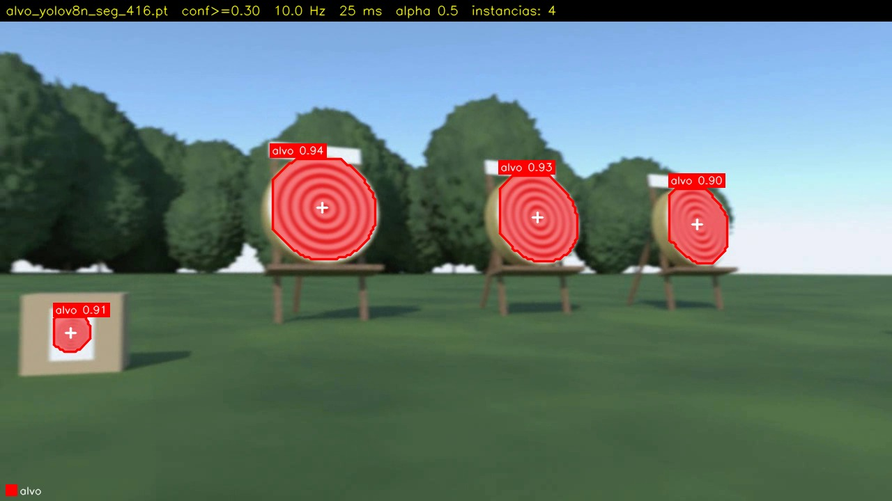

entrega-tp3 / tag tp3 · 27/10/2026projeto-pb-Dev-RMV)ARTEFATOS.md e no README (marcador PB:VIDEO-TP3)| Requisito | Entrega |
|---|---|
Launch file principal (bringup.launch.py) que inicializa em sequência o Gazebo com o mundo do projeto, o robot_state_publisher com o URDF, o RViz2 com configuração salva e todos os nós de percepção dos TPs anteriores; parâmetros via YAML; um único comando; captura de tela |
projeto_bloco/launch/bringup.launch.py: (1) Gazebo com sala_alvos.world + robot_state_publisher (xacro); (2) spawn do robô; (3) ao fim do spawn (OnProcessExit): joint_state_publisher, SLAM Toolbox, rastreador_yolo, servidor_engajar (TP2) e segmentador_yolo (TP3); (4) RViz2 com rviz/bringup.rviz; (5) piloto_demo. Parâmetros em config/params.yaml, bringup.yaml (use_sim_time para todos) e slam.yaml. Comando único: ./scripts/reproduzir.sh ou ros2 launch projeto_bloco bringup.launch.py (fig. 2 e 3). Gazebo Classic 11 em vez do Harmonic: decisão registrada (seção 5) |
Pipeline de TFs e SLAM: SLAM Toolbox integrado, mapa construído em tempo real no RViz2, TFs base_link, odom, map e o scan simulado; TF tree com view_frames e explicação de cada frame |
async_slam_toolbox_node com config/slam.yaml lê /scan (lidar simulado, 360 amostras a 10 Hz) e publica /map e map → odom; odom → base_footprint vem do diff drive do Gazebo; o piloto_demo percorre a sala para o mapa crescer (fig. 4 e 5). Árvore de TF em docs/evidencias/tp3/frames_tp3.pdf, frames explicados na seção 2 |
Segmentação semântica por instância com YOLO em imagens ou vídeo do ambiente do projeto; máscaras coloridas por classe com transparência 0,5 sobre o frame; publicação em /vision/segmented para o RViz2 |
Nó segmentador_yolo com um YOLOv8n-seg treinado para a classe alvo (polígonos gerados a partir do gerador do dataset sintético, sem renderizar de novo); máscaras por classe com alpha 0,5, contorno por instância, rótulo e centroide da máscara; publica /vision/segmented (imagem, exibida no RViz) e /vision/segmentacao (DeteccaoArray). Testado no vídeo do robô e na câmera do Gazebo (fig. 6 e 7) |
| Análise da arquitetura de percepção veicular: protocolos CAN e Ethernet, tipos de sensores, integração de cada um ao pipeline ROS 2 do projeto, relação com os sensores do próprio projeto | Seção 4 e fig. 1: arquitetura E/E típica (backbone Ethernet automotiva para câmeras, lidar e radar de imagem; CAN FD para chassi, radar clássico, GNSS/IMU; LIN para ultrassônicos), a integração ROS 2 de cada sensor e a comparação com o Robô Sniper (câmera USB e lidar UART num Arduino UNO Q) |
bringup.launch.py (parâmetros: config/params.yaml + config/bringup.yaml + config/slam.yaml)
1 gzserver/gzclient (sala_alvos.world) + robot_state_publisher (URDF) 2 spawn_entity (robo_sniper)
3 joint_state_publisher ← /gazebo/joint_states (rodas) + /torre/joint_states (servidor) → /joint_states
slam_toolbox: /scan → /map, TF map→odom (odom→base_footprint: plugin diff drive do Gazebo)
câmera do Gazebo → /camera/image_raw ─┬→ rastreador_yolo → /vision/deteccoes → servidor_engajar → /torre/visao
└→ segmentador_yolo → /vision/segmented · /vision/segmentacao
4 rviz2 -d rviz/bringup.rviz (Map, LaserScan, TF, RobotModel, Odometry, 3 imagens)
5 piloto_demo → /cmd_vel (quadrado de 1,4 m + giro de 360°) → o mapa é construído
robot_state_publisher sobem primeiro; o spawn_entity.py espera o serviço do gzserver, cria o robô e termina; um RegisterEventHandler(OnProcessExit) nesse processo dispara o resto (juntas, SLAM, percepção, RViz) e TimerActions soltam o piloto (3 s) e o cliente_engajar (10 s), que arma a torre e envia três goals de engajamento com o robô ainda parado olhando para os alvos (parâmetros em bringup.yaml). Argumentos: gui, rviz, slam, piloto, engajar, world, show.models/alvo_impresso, exportado por gazebo_model_path). No TP2 os alvos eram anéis geométricos que o detector não reconhecia.bringup.yaml põe use_sim_time: true em todos os nós (/**), então SLAM, TF, Kalman e os carimbos das imagens seguem o /clock do Gazebo.slam.yaml parte do mapper_params_online_async do pacote: frames map/odom/base_footprint, resolução 5 cm, alcance 0,2–12 m, nó novo a cada 0,15 m ou 0,15 rad, fechamento de laço ligado, map → odom a 50 Hz e /map a cada 1 s.reto 1.4 0.25, girar 90 45, parar 3), temporizada pelo relógio do nó (tempo simulado), para a demo ser igual em qualquer máquina. piloto:=false deixa o teleop_twist_keyboard dirigir.model.predict() no frame mais recente a frequencia_hz; para cada instância, o polígono da máscara (masks.xy) é pintado na cor da classe numa cópia do frame, misturada com alpha 0,5 só onde há máscara; contorno, rótulo classe conf e o centroide (momentos da máscara) por cima. A mensagem DeteccaoArray reaproveita a do TP2 com cx, cy = centroide da máscara. Parâmetros alteráveis em execução: confianca, iou, frequencia_hz, imgsz, alpha, threads_cpu e modelo (recarrega).gerar_labels_seg.py) remonta câmera e alvos no Blender e projeta os 96 pontos da borda do alvo em um polígono YOLO-seg, cortado na borda do quadro: 2400 imagens em 37 s, e a caixa de cada polígono coincidiu com a bbox_amodal_px dos metadados em 2497 de 2497 alvos (fig. 6, esquerda). Treino do yolov8n-seg em 416 px por 100 épocas com a mesma degradação tipo câmera DV20: 11 min na GPU.view_frames)| Frame | Pai → quem publica | O que é |
|---|---|---|
map | raiz | Referência fixa do mundo, com origem onde o SLAM começou. Globalmente consistente, mas pode “saltar” quando o SLAM corrige a pose (fechamento de laço). |
odom | map → SLAM Toolbox | Referência da odometria: contínua e suave, mas deriva com o tempo (escorregamento das esteiras). A transformação map → odom é a correção estimada pelo SLAM com o scan. |
base_footprint | odom → plugin diff drive do Gazebo | Projeção do robô no chão (REP 105): origem no centro das esteiras, z = 0. É o frame que o SLAM rastreia (base_frame). |
base_link | base_footprint → robot_state_publisher (fixa) | Corpo do chassi, na altura dos eixos (3,5 cm). REP 103: x para a frente, y para a esquerda, z para cima. |
roda_motriz_*, roda_guia_*, esteira_* | base_link → juntas do Gazebo via joint_state_publisher | Quatro rodas (continuous) e as duas lagartas (fixas) de cada lado. |
camera_link → camera_optical_link | base_link (fixas) | A câmera no padrão do corpo e o frame óptico (z para a frente, x para a direita, y para baixo), que é o frame_id das imagens e do camera_info. |
mastro_link → lidar_link | base_link (fixas) | Mastro traseiro e o lidar no topo: origem do /scan; o SLAM transforma o scan de lidar_link para base_footprint por esta cadeia. |
torre_pan_link → torre_tilt_link → emissor_link | base_link → juntas do servidor_engajar via joint_state_publisher | Torre pan/tilt (duas revolute) e a ponta do cano, origem do feixe do emissor. |
git clone https://github.com/Dev-RMV/projeto-pb-Dev-RMV.git && cd projeto-pb-Dev-RMV ./scripts/reproduzir.sh # instala o que faltar, compila, sobe o bringup e roda view_frames, map_saver, evidências e o cliente
scripts/setup.sh instala pelo apt (ROS 2, RViz, xacro, Gazebo 11, SLAM Toolbox, map_server, teleop) e cria o venv do YOLO. À mão, cada terminal com source ros2_ws/ambiente.sh: ros2 launch projeto_bloco bringup.launch.py (gui:=false, piloto:=false…) · ros2 run tf2_tools view_frames · ros2 run nav2_map_server map_saver_cli -f mapa · ros2 run projeto_bloco cliente_engajar · ros2 run teleop_twist_keyboard teleop_twist_keyboard. A demo do TP2 continua em ./scripts/reproduzir_tp2.sh.

| Sensor (veículo) | Barramento e dados | Integração no pipeline ROS 2 do projeto |
|---|---|---|
| Câmeras (6 a 11; frontal, laterais, ré) | GMSL2/FPD-Link (serial dedicado) até o ECU ou Ethernet 100/1000BASE-T1 com vídeo IP; 30 fps a 1–8 Mpx: dezenas de Mbit/s a Gbit/s por câmera | Driver (V4L2, GigE Vision) → sensor_msgs/Image + CameraInfo em /camera/image_raw, frame_id óptico no URDF: é exatamente a entrada do rastreador_yolo e do segmentador_yolo; no robô, a DV20 entra por USB (UVC) |
| LiDAR 3D (teto/para-choque) | Ethernet UDP (100 Mbit/s a 1 Gbit/s), pacotes de pontos a 10–20 Hz, PTP para sincronizar | Driver (velodyne, ouster_ros) → sensor_msgs/PointCloud2; para o SLAM 2D do projeto bastaria um pointcloud_to_laserscan → /scan. No robô, o lidar 2D (UART/USB-serial, sllidar_ros2) publica /scan direto no lidar_link |
| Radar 77 GHz (frontal e de canto) | CAN FD (2–5 Mbit/s) com lista de objetos; radares 4D de imagem já usam Ethernet | ros2_socketcan → can_msgs/Frame → decodificação pelo DBC → radar_msgs; entraria na fusão com as detecções da câmera (velocidade radial para o Kalman do rastreador) |
| Ultrassônicos (12, estacionamento) | LIN (20 kbit/s) até a ECU de estacionamento, que publica no CAN de carroceria | sensor_msgs/Range; no projeto serviriam como camada de segurança no /cmd_vel (parada por proximidade) |
| Velocidade das rodas, ângulo de direção, IMU do ESP | CAN FD do chassi (determinístico, prioridade por identificador), 50–100 Hz | Nó de odometria: nav_msgs/Odometry + TF odom → base_footprint (o que o plugin do Gazebo faz hoje) e sensor_msgs/Imu; fundidos por robot_localization e consumidos pelo SLAM Toolbox |
| GNSS + IMU de navegação | CAN FD ou UART/NMEA, 10–100 Hz | sensor_msgs/NavSatFix e Imu; daria o map global (navsat_transform) por cima do map local do SLAM |
sensor_msgs com frame_id do URDF.| Medida | Resultado |
|---|---|
| Bringup com um comando (fig. 2 e 3) | ./scripts/reproduzir.sh num clone limpo: build dos 3 pacotes, Gazebo + 13 nós no ar (gazebo, camera_controller, lidar_controller, esteiras, estados_juntas, robot_state_publisher, joint_state_publisher, slam_toolbox, rastreador_yolo, segmentador_yolo, servidor_engajar, piloto_demo, RViz quando há tela); ordem Gazebo → spawn → juntas/SLAM/percepção → RViz → piloto respeitada pelo OnProcessExit |
Taxas medidas (ros2 topic hz, tempo simulado) | /scan 10,0 Hz · /camera/image_raw 15,0 Hz (640×480) · /vision/deteccoes 5,1 Hz · /vision/segmented 2,9 Hz (3 Hz pedidos; 44 ms por quadro na CPU dividida com o Gazebo e o SLAM) · /odom 29 Hz · /tf 50 Hz |
| SLAM e mapa (fig. 4) | mapa de 119 × 120 células a 5 cm (origem −2,99, −2,98 m) salvo com map_saver_cli depois da rota: paredes da sala de 6 × 6 m, pilar, duas caixas, muro e os dois postes dos alvos reconhecíveis; 717 células ocupadas e 13 563 livres; map → odom publicado a 50 Hz |
| Árvore de TF (fig. 5) | view_frames: 17 frames numa só árvore, map → odom → base_footprint → base_link → {esteiras, 4 rodas, camera_link → camera_optical_link, mastro_link → lidar_link, torre_pan_link → torre_tilt_link → emissor_link}; map → base_footprint consultado com tf2_echo antes e depois da rota |
| Rota do piloto (open loop) | quadrado de 1,4 m + giro de 360° em 45 s de tempo simulado; o robô não volta exatamente à origem (escorregamento das esteiras no Gazebo, 158° a cada 172° comandados no TP2), o que é justamente a deriva da odometria que o SLAM corrige em map → odom |
| Engajamento na simulação | com o robô parado na origem olhando para os alvos impressos do mundo, o cliente_engajar (automático no bringup, ou chamado pelo reproduzir.sh) obteve DISPARO em 0,8 s no alvo #1 (9 feedbacks; erro 16,9 px médio → 1,0 px final; torre pan +8,2°, tilt −9,5°), result gravado em engajamentos_tp3.csv: a cadeia câmera simulada → detector → Kalman → mira funciona no Gazebo com a arte real do alvo |
| Segmentação: treino (validação sintética, 400 imagens, 385 alvos) | caixa: precisão 0,927, recall 0,822, mAP50 0,890, mAP50-95 0,739; máscara: precisão 0,902, recall 0,789, mAP50 0,857, mAP50-95 0,619; 11,3 min na GPU, 6,8 MB |
| Segmentação no vídeo do robô (fig. 7) | 2 a 4 alvos por quadro conforme o enquadramento, confiança mediana 0,90 (mín. 0,26, máx. 0,96); 25 ms por quadro na CPU em 416 px (1280×720 de entrada); publicado a 10 Hz |
| Parâmetros em execução | ros2 param set /segmentador_yolo alpha 0.3 aplicado; modelo inexistente.pt recusado com a razão no log; perfil params_uno_q.yaml carregado com ros2 param load troca detector e segmentador para os modelos leves |
| Testes | colcon build dos 3 pacotes sem avisos; check_urdf sem erros; ./scripts/reproduzir.sh num clone limpo (sem janelas) completa as 4 etapas |


sala_alvos.world: sala, pilar, caixas, muro, as folhas com a arte real do alvo, a bola e o robô (fator de tempo real 1,0). Embaixo, o RViz2 com a configuração salva rviz/bringup.rviz ao fim da rota do piloto: o mapa do SLAM Toolbox (cinza = livre, preto = ocupado, verde-escuro = sombra dos obstáculos), o scan do lidar (pontos vermelhos), o robô (URDF) com a torre, a trilha da odometria (setas) e, à esquerda, as três imagens da percepção.

sala_alvos.world: /vision/segmented (esquerda; três instâncias, a terceira meio escondida pela bola) e /vision/rastreamento (direita) sobre o mesmo /camera/image_raw. A saída completa do reproduzir.sh está em docs/evidencias/tp3/reproduzir_saida.txt.

/map salvo com map_saver_cli ao fim da rota: a sala de 6 × 6 m, o pilar (alto à esquerda), as duas caixas, o muro (embaixo) e os postes dos alvos (à direita); cinza = desconhecido (sombra dos obstáculos). Fig. 5 (direita) — árvore de TF do view_frames com o bringup no ar (PDF original em docs/evidencias/tp3/frames_tp3.pdf).


/vision/segmented no vídeo do robô no campo de tiro: quatro instâncias da classe alvo com máscara vermelha a 50%, contorno, confiança e o centroide da máscara (cruz), que é o ponto de mira. Cabeçalho: modelo, limiar, taxa, tempo de inferência e transparência; legenda de cores por classe embaixo.ros_gz) no prazo consumiria o tempo do SLAM e da segmentação; a decisão de manter o Classic foi explícita e está em docs/decisoes.md, com a migração como pendência.params_uno_q.yaml troca para o v8n em execução.dataset_seg/images como junção para as imagens originais fez o treino ler os labels de caixa (o Ultralytics resolve o caminho real) e abortar. Resolvido com hard links por arquivo./joint_states: o plugin do Gazebo (torre em 0) e o joint_state_publisher (torre do servidor) publicavam no mesmo tópico e a torre piscava no RViz. O plugin passou a publicar só as rodas em /gazebo/joint_states, e o joint_state_publisher junta as duas fontes.DISPLAY, o gzserver não renderiza a câmera (o lidar, que é CPU, continua); o reproduzir.sh avisa isso quando /camera/image_raw fica sem dados.set -e no reproduzir.sh deixava o launch (Gazebo, SLAM, nós) rodando, e a execução seguinte falhava no spawn (“entity already exists”). Agora um trap … EXIT encerra o launch em qualquer saída.